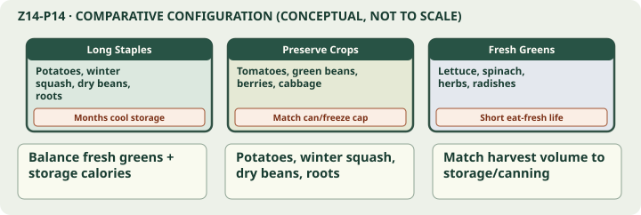

Z14-P14 · Food production and preservation · New manuscript
Prioritize calorie-dense, storage-friendly staples for northern resilience
Allocate limited garden space toward crops that store reliably through northern winters rather than perishable salad-only plots.
When it applies · Households growing supplemental food for autumn/winter resilience in short-season climates.
Equipment · Storage-crop seed plan matched to household dietary preferences and available cellar/canning/drying capacity.

Actions
- Balance garden space intentionally between fresh daily nutrition (greens, herbs, tomatoes) and high-calorie, low-energy storage staples that keep for months with minimal electricity: potatoes, winter squash, dry bush/pole beans, onions, garlic, carrots, beets, and storage cabbage.[P01, P04, P05]
- Grow foods your household ACTUALLY eats and knows how to cook and preserve—an acre of unfamiliar root crops or unpreserved zucchini goes to waste during emergencies.[P15, P01]
- Match crop volume honestly to your real preservation and cold-storage capacity BEFORE planting so August harvest peaks do not rot faster than you can cure, pressure-can, freeze, or dry them.[P04, P06]
Failure recognition · Planting 60 tomato plants with no canning equipment and zero storage staples, losing half the harvest to September rot.[P04, P06]
Verify · Confirm crop mix matches household meals, northern maturity dates, and available curing/cellar/preservation capacity.[P01, P04, P15]
Stop or change course · Do not assume a backyard residential plot alone replaces full household nutrition; treat home production as a high-value supplement paired with rotated pantry reserves.[P15, P01]
Evidence and editorial notes
- P01 · University of Minnesota Extension · Planting the Vegetable Garden (current web edition)
- Section: Site Selection, Sunlight, Frost Dates, and Short-Season Planning · Conditions: Home vegetable gardening in Upper Midwest / Minnesota (USDA Zones 3–5)
Support: Select a sunny well-drained garden site receiving 6–8+ hours of direct sunlight, match crop days-to-maturity to local last-spring and first-autumn frost dates, and separate cool-season crops from frost-sensitive warm-season crops.
Limitations: Microclimates, low frost pockets, and soil clay/sand composition shift local planting windows by weeks. · Conflicting evidence: None; anchors regional Minnesota growing-season realism.
Editorial note: Grounds Z14 regional food production and frost-window planning. · Specialist reviewer: Horticulture and university Extension specialist
Primary source · checked 2026-11-24 - P04 · University of Minnesota Extension · Harvesting and Storing Home Garden Vegetables (current web edition)
- Section: Harvesting Maturity, Curing, and Post-Harvest Handling · Conditions: Home garden root crops, winter squash, onions, potatoes, and greens
Support: Harvest crops at proper maturity during cool morning hours without bruising, cure storage crops (onions, garlic, winter squash, potatoes) at crop-specific warm/dry conditions before cold storage, and cull any nicked or diseased items for immediate use.
Limitations: A single bruised or rotting vegetable spreads decay rapidly across an entire storage bin. · Conflicting evidence: None; explains why curing precedes long cold storage.
Editorial note: Anchors harvest-to-storage quality gates in Z14. · Specialist reviewer: Post-harvest horticulture specialist
Primary source · checked 2026-11-24 - P05 · University of Minnesota Extension · Harvesting and Storing Home Garden Vegetables (current web edition)
- Section: Root-Cellar and Cold-Storage Temperature/Humidity Zones · Conditions: Basements, root cellars, unheated porches, and insulated cold bins
Support: Match stored produce to distinct storage regimes: cold-moist (32–40°F, high humidity for carrots/beets/cabbage), cool-moist (45–50°F for potatoes), cold-dry (32–35°F dry for onions/garlic), and cool-dry (50–55°F dry for winter squash); separate ethylene-producing apples from sensitive vegetables.
Limitations: Storing potatoes below 40°F converts starch to sugar; freezing temperatures ruin unhardened stored roots. · Conflicting evidence: None; prevents treating one basement temperature as universal for all crops.
Editorial note: Core root-cellar zoning and monitoring evidence in Z14. · Specialist reviewer: Post-harvest horticulture and food storage
Primary source · checked 2026-11-24 - P06 · USDA / NCHFP · USDA Complete Guide to Home Canning (2015 / current NCHFP edition)
- Section: Complete Guide to Home Canning > Principle of Tested Protocols · Conditions: All residential home canning (boiling-water and pressure canning)
Support: Treat every USDA/NCHFP tested canning recipe as a single indivisible system: food pH, piece size, liquid viscosity, jar size, headspace, processing method, pressure/temperature, time, and altitude adjustment must all match the tested protocol.
Limitations: Adding extra starch, flour, oil, fats, or altering acid/low-acid ratios slows heat penetration and can cause lethal botulism. · Conflicting evidence: Directly prohibits online untested shortcuts and heirloom recipe alterations.
Editorial note: Foundational system-integrity rule across all Z14 canning cards. · Specialist reviewer: Food preservation process authority and Extension
Primary source · checked 2026-11-24 - P15 · FEMA / Ready.gov · Emergency Food Supply (current web edition)
- Section: Emergency Food Inventory > Non-Perishable Rotation, Dietary Needs, and Tools · Conditions: Household multi-day to 30-day emergency pantry planning
Support: Build a rotated pantry of familiar shelf-stable foods requiring minimal water and no refrigeration (canned proteins/vegetables, dry grains/legumes, nut butters, infant/medical/pet diets), keep a manual can opener, and mark purchase/rotation dates clearly (FIFO).
Limitations: Do not invent unverified multi-decade shelf lives; commercial "Best By" dates reflect quality while damaged, rusted, or dented-seam cans pose safety hazards. · Conflicting evidence: None; aligns with FSG-4 and NCHFP storage hygiene.
Editorial note: Grounds household food inventory, FIFO rotation, and can-integrity screening. · Specialist reviewer: Household preparedness and food safety
Primary source · checked 2026-11-24
Source lineage · UMN Extension Vegetable Gardening and Storage; new manuscript · Classification · New manuscript.